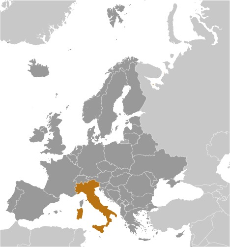

Introduction
In 1861, Italy became a nation-state under King Victor Emmanuel II.
A dictatorship took over the parlimentary government in the early 1920s under Benito Mussolini. This shift led to an alliance with Nazi Germany, and ultimately, a loss in World War II.
Economic prosperity followed Italy's switch to a democratic republic in 1946. Now, Italy is a charter member of NATO and the European Economic Community.
However, Italy faces problems as does the rest of the world. Some current issues include: slow economic growth, youth and female unemployment rates, organized crime, and economic disparities between southern and northern Italy.
Geography

Italy is located in Southern Europe with the peninsula going into the Mediterranean Sea.
Land Boundaries
There are 6 countries that border Italy:
- Austria
- France
- Vatican City
- San Marino
- Slovenia
- Switzerland
Natural Resources
Italy is mainly used for agricultural land. It makes up 47% of the country. The Natural resources they are known for are coal, antimony, mercury, zinc, marble, pumice, natural gas, crude oil reserves, and arable land.
Hazards
There are many regional risks including landslides, mudflows, avalanches, earthquakes, and volcanic eruptions. A large threat is the volcanic activity. Volcano Etna is Italy's most active volcano. The eruptions pose a threat to Sicilian villages and is in eruption as of 2013. Additionally, Italy's most famous volcano, Vesuvius, still remains a threat.
For more information on the risks of volcanos in Italy, click here
Economy

Overview
Italy is a core part of Europe's economy. They have tourism sectors that sustained a strong recovery following the post-COVID inflation.
Inflation Rate Over the Past 3 Years
- 2021-1.87%
- 2022-8.2%
- 2023-5.62%
Italy's most recent economic forecast is available here.
Unemployment Rates
20.1% of Italy's population is below the poverty line. Additionally 7.62% of the country is unemployed. There are much higher rates of 15-24 year olds that are unemployed. 22.7% of Italians in that age range are unemployed.